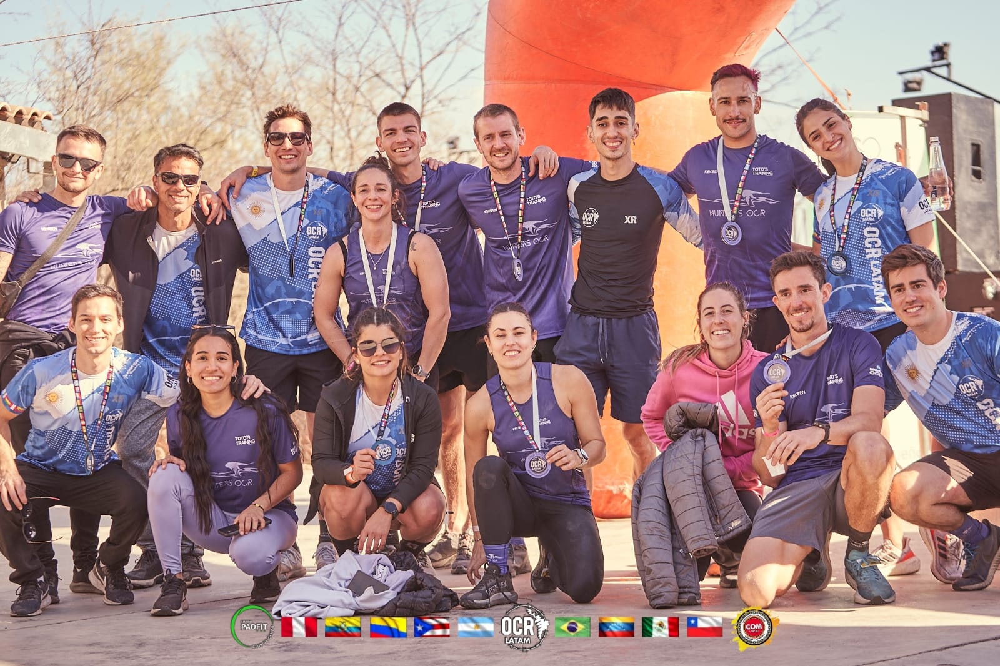

HUNTERS OCR
Somos un grupo de amigos que comparten la misma pasión por un deporte, el OCR.
Hunters se fundó en Noviembre de 2022 por la iniciativa del entrenador de OCR Tomás Liebau (Toto). Desde ese momento el equipo fue creciendo tanto en numero como en valores, dentro de los cuales se destacan el compañerismo, respeto, dedicación y pasión.
Hunters es más que un equipo de OCR, es un grupo de amigos, una familia que se caracteriza por llevar su fiesta, unidad y compañerismo a cada carrera en la que participa.